| Function↕ | Baseline (ms)↕ | Best backend↕ | Speedup↕ | Verify↕ | Recommendation |
|---|---|---|---|---|---|
| moving_average | 11.4620 | cumsum | 674.24x | PASS | Adopt cumsum — 674.24x faster. |
| normalize_smoothed | 23.2480 | moving_average=cumsum+normalize=numpy | 567.02x | PASS | Adopt moving_average=cumsum+normalize=numpy — 567.02x faster. |
| normalize | 0.0060 | numpy | 1.07x | PASS | Adopt numpy — 1.07x faster. |
| clip_normalize | 0.0350 | original__no_fast_clip | 0.00x | PASS | Keep original — no alternative is faster (best original__no_fast_clip is 0.00x). |
| Parameters | Backend↕ | Status↕ | Max |diff|↕ | |
|---|---|---|---|---|
| size↕ | window↕ | |||
| 512 | 8 | convolve | PASS | 2.220e-16 |
| 512 | 8 | cumsum | PASS | 7.827e-15 |
| 512 | 64 | convolve | PASS | 2.220e-16 |
| 512 | 64 | cumsum | PASS | 2.998e-15 |
| 2048 | 8 | convolve | PASS | 2.220e-16 |
| 2048 | 8 | cumsum | PASS | 2.998e-14 |
| 2048 | 64 | convolve | PASS | 2.220e-16 |
| 2048 | 64 | cumsum | PASS | 7.605e-15 |
| Parameters | Backend↕ | Status↕ | Max |diff|↕ |
|---|---|---|---|
| size↕ | |||
| 4096 | original__no_fast_clip | PASS | 0.000e+00 |
| 16384 | original__no_fast_clip | PASS | 0.000e+00 |
| Parameters | Backend↕ | Status↕ | Max |diff|↕ |
|---|---|---|---|
| size↕ | |||
| 1024 | numpy | PASS | 0.000e+00 |
| 4096 | numpy | PASS | 0.000e+00 |
| 16384 | numpy | PASS | 0.000e+00 |
| Parameters | Backend↕ | Status↕ | Max |diff|↕ | |
|---|---|---|---|---|
| size↕ | window↕ | |||
| 1024 | 8 | moving_average=convolve+normalize=numpy | PASS | 1.388e-17 |
| 1024 | 8 | moving_average=convolve+normalize=original | PASS | 1.388e-17 |
| 1024 | 8 | moving_average=cumsum+normalize=numpy | PASS | 1.166e-15 |
| 1024 | 8 | moving_average=cumsum+normalize=original | PASS | 1.166e-15 |
| 1024 | 8 | moving_average=original+normalize=numpy | PASS | 0.000e+00 |
| 1024 | 64 | moving_average=convolve+normalize=numpy | PASS | 2.082e-17 |
| 1024 | 64 | moving_average=convolve+normalize=original | PASS | 2.082e-17 |
| 1024 | 64 | moving_average=cumsum+normalize=numpy | PASS | 3.608e-16 |
| 1024 | 64 | moving_average=cumsum+normalize=original | PASS | 3.608e-16 |
| 1024 | 64 | moving_average=original+normalize=numpy | PASS | 0.000e+00 |
| 4096 | 8 | moving_average=convolve+normalize=numpy | PASS | 1.041e-17 |
| 4096 | 8 | moving_average=convolve+normalize=original | PASS | 1.041e-17 |
| 4096 | 8 | moving_average=cumsum+normalize=numpy | PASS | 2.474e-15 |
| 4096 | 8 | moving_average=cumsum+normalize=original | PASS | 2.474e-15 |
| 4096 | 8 | moving_average=original+normalize=numpy | PASS | 0.000e+00 |
| 4096 | 64 | moving_average=convolve+normalize=numpy | PASS | 6.939e-18 |
| 4096 | 64 | moving_average=convolve+normalize=original | PASS | 6.939e-18 |
| 4096 | 64 | moving_average=cumsum+normalize=numpy | PASS | 7.130e-16 |
| 4096 | 64 | moving_average=cumsum+normalize=original | PASS | 7.130e-16 |
| 4096 | 64 | moving_average=original+normalize=numpy | PASS | 0.000e+00 |
| Parameters | Time (ms) | Speedup | |
|---|---|---|---|
| size↕ | original↕ | original__no_fast_clip↕ | original__no_fast_clip↕ |
| 4096 | 0.0130 | 9.2670 | 0.00x |
| 16384 | 0.0350 | 54.8580 | 0.00x |
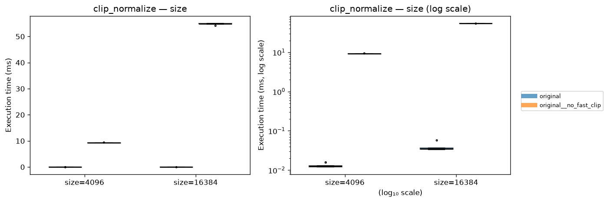
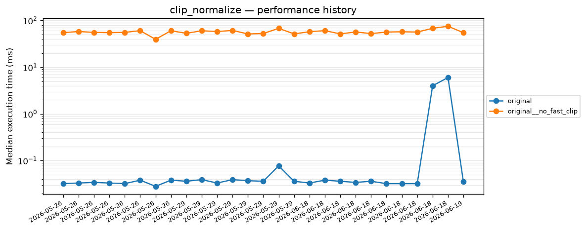
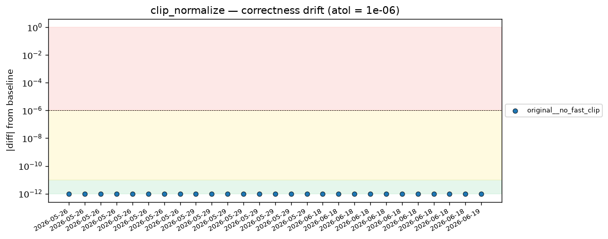
| Parameters | Time (ms) | Speedup | ||||
|---|---|---|---|---|---|---|
| size↕ | window↕ | original↕ | convolve↕ | cumsum↕ | convolve↕ | cumsum↕ |
| 512 | 8 | 2.9830 | 0.0060 | 0.0100 | 497.17x | 298.30x |
| 512 | 64 | 2.6140 | 0.0130 | 0.0100 | 201.08x | 261.40x |
| 2048 | 8 | 11.8280 | 0.0100 | 0.0170 | 1182.80x | 695.76x |
| 2048 | 64 | 11.4620 | 0.0440 | 0.0170 | 260.50x | 674.24x |
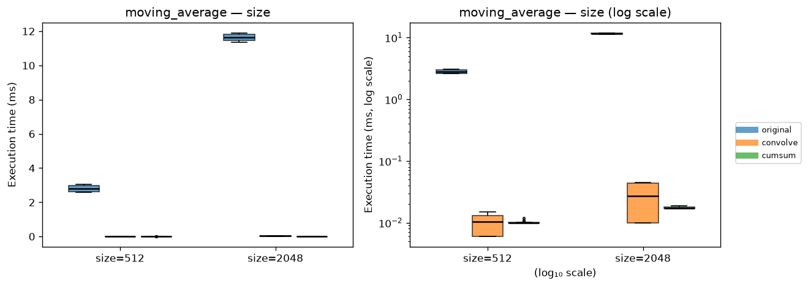
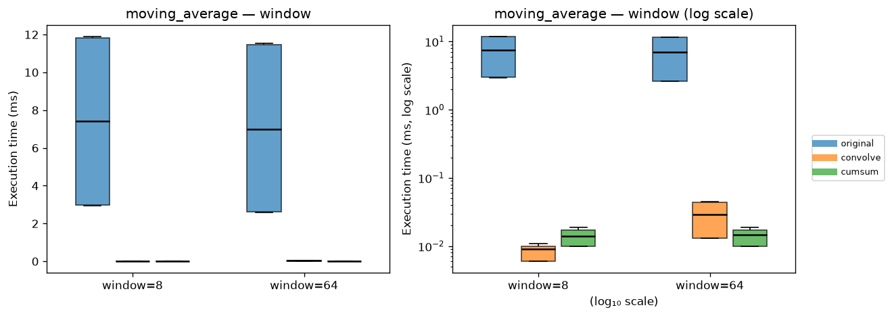
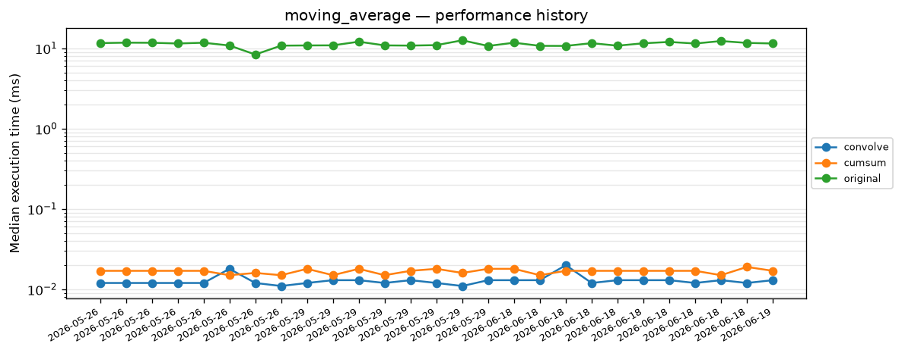
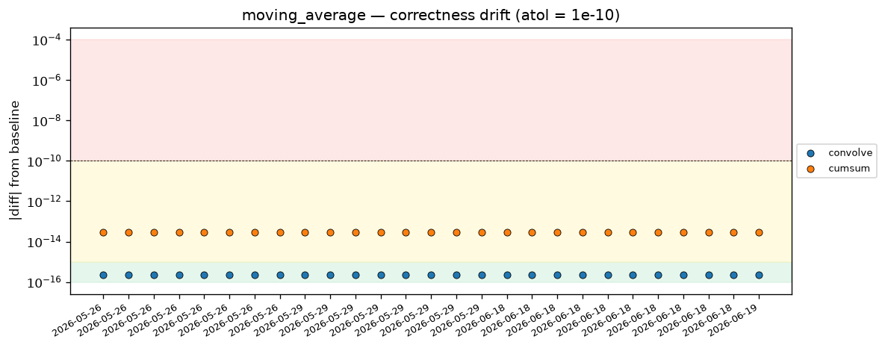
| Parameters | Time (ms) | Speedup | |
|---|---|---|---|
| size↕ | original↕ | numpy↕ | numpy↕ |
| 1024 | 0.0040 | 0.0040 | 1.00x |
| 4096 | 0.0060 | 0.0050 | 1.20x |
| 16384 | 0.0150 | 0.0140 | 1.07x |
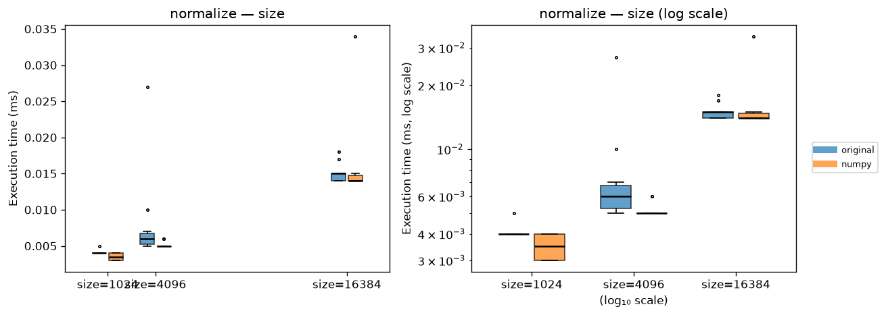
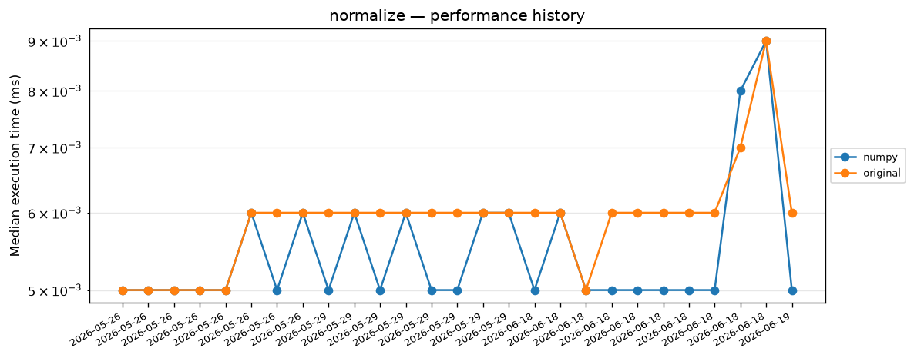
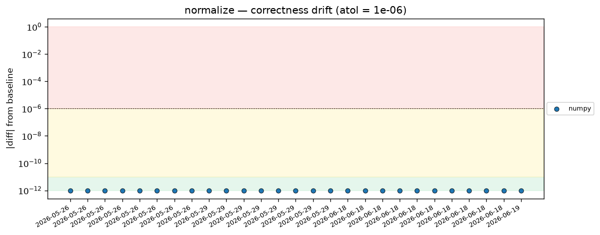
| Parameters | Inner backends | Time (ms)↕ | Speedup↕ | ||
|---|---|---|---|---|---|
| size↕ | window↕ | moving_average↕ | normalize↕ | ||
| 1024 | 8 | convolve | numpy | 0.0270 | 218.56x |
| 1024 | 64 | convolve | numpy | 0.0470 | 121.81x |
| 4096 | 8 | convolve | numpy | 0.0350 | 679.49x |
| 4096 | 64 | convolve | numpy | 0.1140 | 203.93x |
| 1024 | 8 | convolve | original | 0.0180 | 327.83x |
| 1024 | 64 | convolve | original | 0.0370 | 154.73x |
| 4096 | 8 | convolve | original | 0.0270 | 880.81x |
| 4096 | 64 | convolve | original | 0.0980 | 237.22x |
| 1024 | 8 | cumsum | numpy | 0.0240 | 245.88x |
| 1024 | 64 | cumsum | numpy | 0.0230 | 248.91x |
| 4096 | 8 | cumsum | numpy | 0.0410 | 580.05x |
| 4096 | 64 | cumsum | numpy | 0.0410 | 567.02x |
| 1024 | 8 | cumsum | original | 0.0240 | 245.88x |
| 1024 | 64 | cumsum | original | 0.0240 | 238.54x |
| 4096 | 8 | cumsum | original | 0.0410 | 580.05x |
| 4096 | 64 | cumsum | original | 0.0410 | 567.02x |
| 1024 | 8 | original | numpy | 6.3450 | 0.93x |
| 1024 | 64 | original | numpy | 5.6550 | 1.01x |
| 4096 | 8 | original | numpy | 23.6500 | 1.01x |
| 4096 | 64 | original | numpy | 23.8260 | 0.98x |
| 1024 | 8 | original | original | 5.9010 | 1.00x |
| 1024 | 64 | original | original | 5.7250 | 1.00x |
| 4096 | 8 | original | original | 23.7820 | 1.00x |
| 4096 | 64 | original | original | 23.2480 | 1.00x |
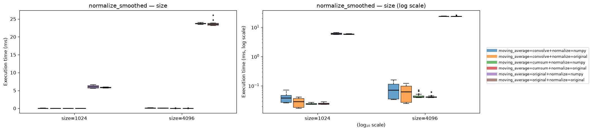
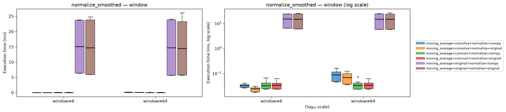
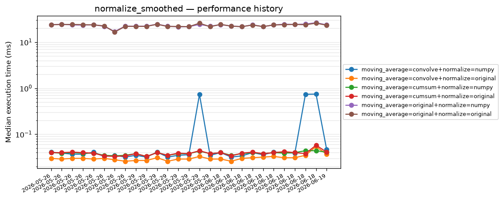
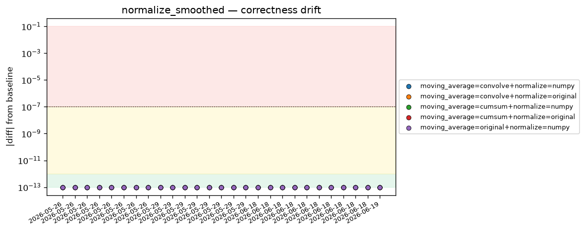
| Function / Backend | Current (ms) | Prior (ms) | Change | Prior commit |
|---|---|---|---|---|
| clip_normalize_original__no_fast_clip | 54.8580 | 56.5040 | -2.9% | 90b9d234 |
| normalize_numpy | 0.0050 | 0.0050 | +0.0% | 90b9d234 |
| normalize_smoothed_moving_average=original+normalize=original | 23.2480 | 24.2290 | -4.0% | 90b9d234 |
| normalize_smoothed_moving_average=cumsum+normalize=numpy | 0.0410 | 0.0400 | +2.5% | 90b9d234 |
| normalize_smoothed_moving_average=convolve+normalize=numpy | 0.0470 | 0.0390 | +20.5% | 90b9d234 |
| normalize_smoothed_moving_average=convolve+normalize=original | 0.0370 | 0.0310 | +19.4% | 90b9d234 |
| normalize_original | 0.0060 | 0.0060 | +0.0% | 90b9d234 |
| moving_average_original | 11.4620 | 11.4460 | +0.1% | 90b9d234 |
| normalize_smoothed_moving_average=original+normalize=numpy | 23.6500 | 24.1790 | -2.2% | 90b9d234 |
| normalize_smoothed_moving_average=cumsum+normalize=original | 0.0410 | 0.0400 | +2.5% | 90b9d234 |
| moving_average_convolve | 0.0130 | 0.0120 | +8.3% | 90b9d234 |
| clip_normalize_original | 0.0350 | 0.0320 | +9.4% | 90b9d234 |
| moving_average_cumsum | 0.0170 | 0.0170 | +0.0% | 90b9d234 |